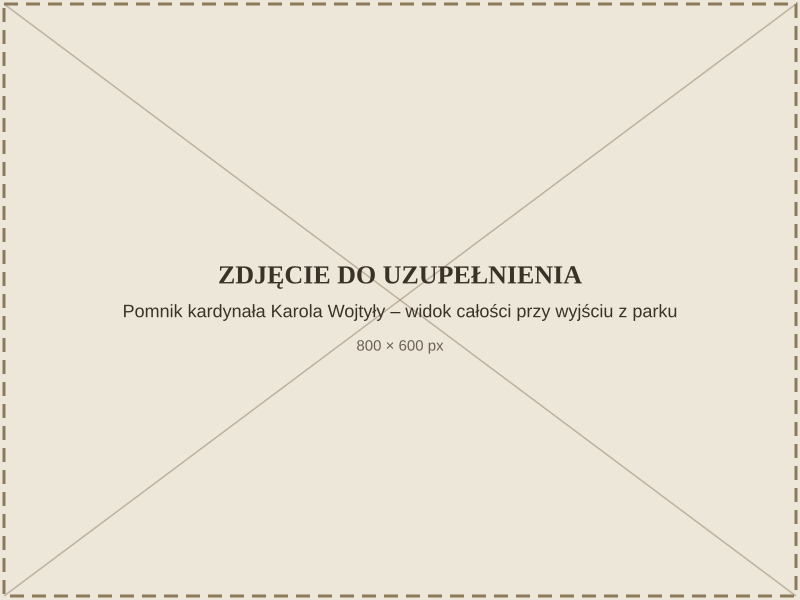

Papal Stone
Recording
Prefer to read? Expand the transcript
The Papal Stone, together with the plaque dedicated to Cardinal Karol Wojtyła's stays in Nałęczów, was created in 1999.
Cardinal Karol Wojtyła came to Nałęczów in the 1960s, and was here for the last time in 1976. He stayed privately with the Salvatorian priests and celebrated Mass in the Chapel of St. Charles Borromeo. He liked to walk through the loess ravines. His favourite ravine was the Łukoszyn ravine, now often informally called the Papal Ravine.
The initiative to create this plaque came from Tadeusz Adamczyk, chairman of the Nałęczów City Council. The official unveiling took place on the 21st anniversary of John Paul II's pontificate.
Stanisław Strzyżyński also made several dozen sacred figures that can be seen all over Poland. In Nałęczów, next to the Chapel of St. Charles Borromeo, there is a figure of Our Lady of the Mystical Rose and a monument to Maximilian Kolbe, which we made together. A great challenge for both of us was carving the six-metre figure of Christ the Saviour for Marek Kotański, intended for Markot in Warsaw.
Sacred art was very important to my father. His whole life, he searched for God and strengthened his faith, which mattered a great deal to him. The human being was just as important to him and was at the centre of his interest — throughout his work you can see the human being, and behind that person, the search for God.
By one of the exits from the Spa Park stands a monument with a plaque commemorating Cardinal Karol Wojtyła's stays in Nałęczów — the future Pope John Paul II. The monument was made by Stanisław Strzyżyński together with his son Zbigniew.

For many visitors, this is a brief stop for reflection before the route continues on to Ewelina café.

How to get there
The mini-map is currently unavailable.